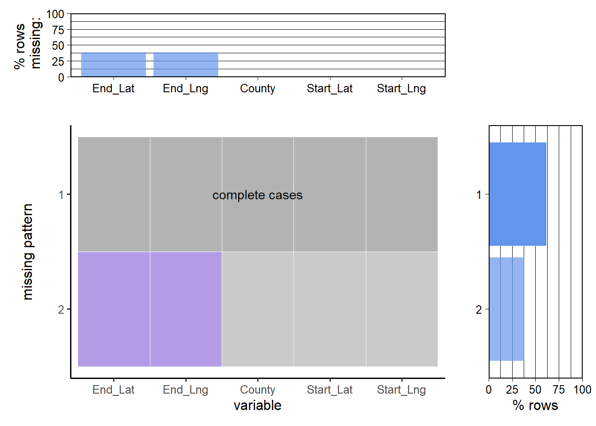

The data consist of countrywide car accidents that covers 49 states of the USA. The accident data were collected from February 2016 to March 2023, using multiple APIs that provide streaming traffic incident (or event) data. These APIs broadcast traffic data captured by various entities, including the US and state departments of transportation, law enforcement agencies, traffic cameras, and traffic sensors within the road networks. The dataset currently contains approximately 7.7 million accident records.
Sobhan Moosavi collected and updated this dataset (Fully Accessable Here) with his collaborators almost every year (we use the latest one that is published at March 2023), according to the papers “A Countrywide Traffic Accident Dataset.” [Visit Paper] and “Accident Risk Prediction based on Heterogeneous Sparse Data: New Dataset and Insights.” [Visit Paper].
For the purpose of our investigation, we exclusively utilize accident data specific to New York City, encompassing its boroughs—Bronx, Queens, New York, Richmond and Kings. This dataset comprises a substantial 117,817 entries, each encompassing a comprehensive set of 46 variables. These variables encapsulate crucial information such as the temporal aspects, geographic coordinates, descriptive narratives, and other miscellaneous features characterizing each accident incident. The entirety of this extensive dataset is conveniently stored in a CSV file denoted as “NY_Accidents_March23.csv.”
The geographical details are meticulously encoded through longitude and latitude coordinates, providing a nuanced representation of the accident locations during distinct time frames. Complementary to this, the dataset encompasses computed distance metrics and timestamp information. Additionally, there exists a set of factor-like variables that categorically classify the common reasons for traffic accidents, offering a detailed contextualization of the incidents.
Facilitating a seamless integration into our analysis pipeline, the dataset is thoughtfully organized by its authors. Our approach involves the straightforward download of this dataset, followed by its importation into the R environment using the “read.csv()” function. This meticulous organization ensures that we can efficiently access and analyze the wealth of information encapsulated within the dataset, contributing to a more comprehensive understanding of traffic accidents within the diverse landscape of New York City.
2.2 Research plan
Traffic accidents are an ongoing concern in urban landscapes, and New York City is no exception. As we embark on this exploration, our dataset emerges as a crucial asset, offering a holistic perspective on traffic accidents in NYC. Comprising 117,817 entries with 46 variables, including temporal, spatial, and descriptive details, our dataset, stored in the “NYC_Accidents_March23.csv” file, presents an unparalleled opportunity to unravel the intricate dynamics of traffic accidents in the city.
Spatial Variation in Accident Density:
The dataset’s geospatial information, encoded as longitude and latitude coordinates, provides an avenue to scrutinize the spatial distribution of traffic accidents across NYC. By leveraging these coordinates, we can map and analyze the density of accidents in different neighborhoods and boroughs. This spatial lens allows us to identify hotspots, understand localized trends, and offer insights into the geographic disparities in accident occurrence.
This the main goal for our project, we want to analyze the factors causing traffic accidents and visualizing the accident density geologically.
Contributing Factors:
Beyond spatial considerations, our dataset delves into the factors contributing to traffic accidents. With 47 variables, it encapsulates a nuanced view of accident scenarios, including environmental conditions, road infrastructure, and human-related factors. By dissecting these variables, we can discern the primary contributors to accidents, aiding in the development of targeted interventions and policies to enhance road safety.
Temporal Trends:
The dataset’s temporal attributes, including timestamps and temporal variables, pave the way for a comprehensive analysis of temporal trends in traffic accidents. We can explore variations by time of day, day of the week, and seasonal patterns. This temporal lens enables us to uncover patterns in accident occurrence, facilitating the identification of peak times and aiding in the formulation of strategies to mitigate temporal risks.
Comparative Analysis of Boroughs:
A distinctive feature of our dataset is its detailed breakdown by boroughs—Bronx, Queens, New York, Richmond and Kings. This borough-level granularity facilitates a comparative analysis, allowing us to discern variations in accident density, contributing factors, and temporal trends between different areas of the city. Understanding these borough-specific nuances is crucial for tailoring interventions and policies to the unique characteristics of each borough.
Our dataset serves as a powerful instrument for unraveling the multifaceted dynamics of traffic accidents in NYC. Through spatial analyses, factor identification, temporal trend exploration, and borough-level comparisons, we aim to contribute meaningful insights that can inform evidence-based decision-making for enhancing road safety in the diverse and dynamic urban landscape of New York City.
2.3 Missing value analysis
We will first analyze possible missing values in our dataset. For our main goal, Spatial Variation in Accident Density and Comparative Analysis of Boroughs, we need to check the portion of valid data in the whole set.
Code
library(ggplot2)library(reshape2)library(dplyr)library(tidyr)library(redav)data <-read.csv('../NY_Accidents_March23.csv')position <- data %>%select(County, Start_Lat, Start_Lng, End_Lat, End_Lng)plot_missing(position)

Code
mv_summary <- position %>%group_by(County) %>%summarize(Start_Lat_missing =mean(is.na(Start_Lat)),Start_Lng_missing =mean(is.na(Start_Lng)),End_Lat_missing =mean(is.na(End_Lat)),End_Lng_missing =mean(is.na(End_Lng)) )mv_summary <-pivot_longer(mv_summary, cols =-County, names_to ="Indicator", values_to ="Value")ggplot(mv_summary, aes(x = Indicator, y = County, fill = Value)) +geom_tile(color ="white") +scale_fill_gradient(low ="lightblue", high ="black") +theme_minimal() +labs(title ="Heatmap of Indicators by County", x ="Indicator", y ="County")
In conclusion, our analysis of the dataset reveals notable variations in the prevalence of missing values across different geographic regions and specific columns. Particularly, the “End_Lat” and “End_Lng” columns exhibit a significant number of missing values. Richmond stands out with a considerably high missing value proportion, reaching 0.444. In contrast, Queens, New York, Kings, and Bronx show a more comparable range of 0.35-0.4 in terms of missing value proportions for these columns.
It is noteworthy that there are no missing values in the “Start_Lat” and “Start_Lng” columns. Consequently, for our research purposes, relying on the start positions becomes imperative for drawing density patterns. The disparities in missing value proportions underscore the importance of considering regional variations when interpreting and utilizing the data. By focusing on the available information in the “Start_Lat” and “Start_Lng” columns, we can still glean valuable insights into the density patterns of the incidents under investigation.
Second, for Contributing Factors, we would like to see if there is missing value for the reason of the accident. It may possible for an accident without a clear conclusion about its fault or it may not very common, which could leads a deeper research in the future.
Code
reason <- data[, c(14, 30:42)]reason[, -1] <-lapply(reason[, -1], as.logical)reason$TrueCount <-rowSums(reason[, -1])reason_stat <- reason %>%group_by(County) %>%summarize(Non_Common =sum(TrueCount ==0) /n(),Single_Factor =sum(TrueCount ==1) /n(),Multiple_Factor =sum(TrueCount >1) /n() )rs_long <-gather(reason_stat, key ="Factors", value ="Fraction", -County)frac_order <-rev(names(reason_stat)[2:ncol(reason_stat)])rs_long$Factors <-factor(rs_long$Factors, levels = frac_order)ggplot(rs_long, aes(x = County, y = Fraction, fill = Factors)) +geom_bar(stat ="identity", position ="fill", color ="white") +theme_minimal() +guides(fill =guide_legend(title =NULL)) +labs(title ="Fraction of Accident Factors", x ="County", y ="Fraction") +theme(axis.text.x =element_text(angle =45, hjust =1)) +scale_y_continuous(labels = scales::percent_format(scale =100))
In our dataset, we observe that approximately half of the recorded traffic accidents in New York City are distributed among the five counties, namely Bronx, Queens, New York, Richmond, and Kings. It is noteworthy, however, that the county of Kings stands out with the highest incidence of accidents attributed to multiple contributing factors. Despite this variation, the individual fractions of accidents within each area are relatively similar.
This intriguing pattern prompts the possibility of conducting a more in-depth investigation into the underlying factors contributing to traffic accidents. By delving into the specific factors associated with accidents, we may uncover unique insights and patterns that could inform targeted interventions for improving road safety.
For this future research endeavor, it is important to highlight that we retain more than half of the original dataset, providing a substantial foundation for analyzing the contributing factors in these traffic accidents. This ample dataset ensures that our analysis remains robust and comprehensive, offering a solid basis for understanding the nuances of traffic accidents across the diverse landscape of New York City.